조경기사 (2013-03-10 기출문제)
1과목: 조경사
1. 다산초당(茶山草堂) 연못 조성과 관련된 글인 “中起三峯石假山”에서 삼봉의 의미는?
- 금강산, 지리산과 한라산의 산악신앙에 의한 명상을 상징한다.
- 봉래, 방장과 영주의 신선사상에 의한 삼신상을 상징한다.
- 돌의 배석기법인 불교에 의한 삼존석불을 상징한다.
- 천ㆍ지ㆍ인의 우주근원을 나타낸 삼재사상을 상징한다.
(정답률: 79%)

2. 중국 이화원(頤和圓) 의 설명으로 맞지 않는 것은?
- 청(淸)의 건륭제(乾隆帝)가 북경에 처음으로 조영했다.
- 건륭 29년에 원림공사를 완료하고 청의원이라 했다.
- 만수산(萬壽山)이라고 하는 인공산이 있다.
- 곤명호(昆明湖)가 있다.
(정답률: 41%)
3. 고대 메소포타미아인들의 정원 개념에 대한 설명으로 틀린 것은?
- 불모지인 사막의 경관을 이상화하였다.
- 관개용 수로를 기본적으로 배치하였다.
- 높은 담으로 둘러싼 뜰 안을 기하학적으로 배치하였다.
- 방형(方形)의 공간에 천국의 4대강을 뜻하는 Paradise 개념의 수로를 배치하였다.
(정답률: 68%)
4. 화암수록(花菴繡錄)의 28우(友)에 근거한 식물의 상징성과 일치하지 않는 것은?
- 송 : 노우(老友)
- 연 : 정우(淨友)
- 대나무 : 청우(淸友)
- 매화 : 시우(時友)
(정답률: 54%)
5. 일본의 전형적 지당(池塘) 중심의 정토정원(淨土庭園)을 꾸미는데 있어서 공식처럼 되어 있는 구성요소의 순서가 옳게 나열된 것은?
- 남문 - 홍교(虹橋) - 중도(中島) - 평교(平橋) - 금당(金堂)
- 남문 - 평교(平橋) - 중도(中島) - 홍교(虹橋) - 금당(金堂)
- 남문 - 반교(盤橋) - 중도(中島) - 홍교(虹橋) - 금당(金堂)
- 남문 - 평교(平橋) - 홍교(虹橋) - 중도(中島) - 금당(金堂)
(정답률: 57%)
6. 공중정원, 바벨탑 등의 인공경관과 관련이 있는 고대도시는?
- 우르(Ur)
- 바빌론(Babylon)
- 니네베(Nineveh)
- 기제(Gizeh)
(정답률: 77%)
7. 일본 도산(모모야마) 시대를 대표하는 정원으로서 풍신수길이 “등호석”이라는 유명한 돌을 운반하여 조성한 정원이 있는 곳은?
- 이조성
- 삼보원
- 계리궁
- 육의원
(정답률: 52%)
8. 한(漢)나라의 무제(武帝)가 꾸민 상림원(上林園)에 관한 설명으로 옳은 것은?(오류 신고가 접수된 문제입니다. 반드시 정답과 해설을 확인하시기 바랍니다.)
- 원림내에는 황제가 봄, 가을 수렵할 수 있는 곳이 마련되어 있다.
- 원림안에는 곤명호를 비롯한 일곱 개의 호수가 만들어졌다.
- 곤명호의 동서 언덕에는 견우ㆍ직녀와 봉황새 그리고 거북이의 돌조상(石彫像)이 배치되었다.
- 태액지에는 한 개의 봉래섬이 만들어졌고 호수가에는 청동의 동물상이 배치되었다.
(정답률: 44%)
9. 다음 창덕궁 내에 있는 정자 중 입지 특성이 다른 하나는?
- 애련정
- 부용정
- 농수정
- 관람정
(정답률: 56%)
10. 고려시대에 조영된 민간정원과 관련 인물의 연결이 잘못된 것은?
- 김치양 - 행단(杏亶)
- 기홍수 - 퇴식재(退食齋)
- 이규보 - 이소원(理小園)
- 최충헌 - 남산리제(男山里弟)
(정답률: 45%)
11. 그리스 페리클레스시대에 아테네에 있었던 아고라의 형태를 가장 잘 설명한 것은?
- 신전과 같은 기념적인 건물을 축으로 생각하여 조성하였다.
- 인간의 이용을 중심으로 한공간으로 분절시켰으며 부정형이었다.
- 주도로를 측면으로 낀 사각형 형태로 조성되었다.
- 열주회랑에 의해 둘러 싸여진 정형적인 형태였다.
(정답률: 58%)
12. 다음 중 누각과 정자의 차이점에 대한 설명으로 옳지 않은 것은?
- 누각은 공적으로 이용하던 공간이고 정자는 사적으로 이용하던 공간이다.
- 누각은 대부분 방이 있으며 패쇄적인 반면에 정자는 방이 없으며 개방적이다.
- 누각은 일반적으로 장방형인데 비해 정자는 다양한 형태로 나타난다.
- 누각은 주로 지방의 수령들에 의해 조영되는 반면에 정자는 다양한 계층에 의해 조영되었다.
(정답률: 57%)
13. 르네상스 정원에 대한 설명 중 적합하지 않은 것은?
- 정원은 인간의 품위를 높이고 고상한 취미 생활을 위한 것이었다.
- 정원형태는 대단히 엄격한 고전적 비례와 수학적 계산에 의해 구성되었다.
- 주택은 정원과 자연경관을 향해 내향적이었다.
- 빌라는 아름답고 트인 조망과 미풍을 맞을 수 있는 구릉이나 산간의 경사지에 입지하게 되었다.
(정답률: 69%)
14. 낙안읍성의 성곽 동문밖에 풍수지리적 이유로 돌로 만들어진 한 쌍의 동물은?
- 청룡
- 해태
- 개
- 불가사리
(정답률: 60%)
15. 스페인 알함브라 궁원내'사자의 중정'에 대한 특징을 가장 잘 설명한 것은?
- 수로의 중정
- 도금양의 중정
- 주랑식 중정
- 사이프러스 중정
(정답률: 57%)
16. 조경양식의 국제 교류에 대한 사실로서 틀린 것은?
- 중국 명(明)시대에 평면기하학식정원의 도입에 이루어졌다.
- 프랑스에도 영국의 풍경식정원이 직접 영향을 미쳤다.
- 멜보른 홀(Melbourne Hall)은 프랑스식 정원양식의 영향이 컸다.
- 영국의 큐가든(Kew Garden)은 중국식 정원양식의 영향을 받았다.
(정답률: 60%)
17. 현상을 그린 그림과 개조 후의 경관을 그린 그림을 한데모아 개조 전, 후의 대지 상황을 한눈에 비교할 수 있는 슬라이드(Slide) 방법을 쓴 정원가는?
- 켄트(William Kent)
- 랩턴(Humphry Repton)
- 브리지맨(Charles Bridgeman)
- 에디슨(Joseph Addison)
(정답률: 71%)
18. Versailles 가 계획의 계기가 되었고, 그 디자인에 가장 큰 영향을 미쳤던 작품은?
- Villa d?est
- Vaux-le-Vicomte
- Villa Medici
- Villa Lante
(정답률: 71%)
19. 한국, 중국, 일본에 있어서 왕의 절대 권력과 연관되어 발달된 도시계획 형태는?
- 환상(環狀)형
- 방사(放射)형
- 격자(格子)형
- 대상(帶狀)형
(정답률: 64%)
20. 다음 중 별서(別墅)에 대한 설명으로 틀린 것은?
- 별서는 별장형과 별업형 별서가 있으며, 제1의 주택개념이다.
- 기록에 의한 국내 최초의 별서 경영자는 최치원이다.
- 소쇄원, 명옥헌, 남간정사, 옥호정 등은 별서에 해당한다.
- 사절유택(四節遊宅)은 신라시대의 별서주택개념이다.
(정답률: 70%)
2과목: 조경계획
21. 다음 주 우수유량을 결정하는데 영향력이 가장 적은 요소는?
- 강우시간 및 강우강도
- 지표면의 경사방향
- 지표면을 형성하는 토양의 종류
- 지표면에 형성된 식생의 종류
(정답률: 50%)
22. 쿨데삭(cul-de-sac)형태의 도로 패턴이 가장 효과적으로 이용될 수 있는 장소는?
- 주거단지
- 공업단지
- 관광단지
- 도심지
(정답률: 76%)
23. 다음 노외주차장의 설치에 대한 계획기준 중 ( )안에 적합한 것은?
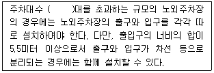
- 300대
- 400대
- 500대
- 600대
(정답률: 33%)
24. 샹디가르(Chandigarh)에 적용된 공원?녹지체계 유형은?
- 집중형
- 분산형
- 대상형
- 격자형
(정답률: 52%)
25. 개인적 공간의 거리 및 기능에 대한 설명 중 틀린 것은?
- 친밀한 거리 : 0~45㎝의 거리로, 부모와 아기 혹은 연인들과 같은 아주 가까운 사람들 사이의 거리이다.
- 개인적 거리 : 45~120㎝의 거리로, 친한 친구 혹은 잘 아는 사람들 간의 일상적 대화가 유지되는 거리이다.
- 사회적 거리 : 120~360㎝의 거리로, 주로 업무상의 대화에서 유지되는 거리이다.
- 공적 거리 : 거리와 상관없는 개념으로, 방송 등을 통한 추상적 거리가 이에 해당한다.
(정답률: 74%)
26. 다음 중 자연공원법상의 용도지구 분류로 틀린 것은?
- 공원자연보존지구
- 공원자연환경지구
- 공원밀집마을지구
- 공원문화유산지구
(정답률: 59%)
27. 예측년도가 단기간이고 환경변화가 적으며 현재의 추세가 장래에도 계속된다고 가정할 때 효과적인 공간 수요량 산정 모델은?
- 시계별 모델
- 중력모델
- 요인분석 모델
- 외삽모델
(정답률: 63%)
28. 관리사무소를 설치하여야 하는 공동주택을 건설하는 주택단지의 최소 규모는? (단, 주택건설기준 등에 관한 규정에 따른다)
- 50세대
- 100세대
- 150세대
- 300세대
(정답률: 54%)
29. 도시공원 및 녹지 등에 관한 법률상 공원시설 구분과 해당시설이 올바르게 연결된 것은?
- 휴양시설 : 긴 의자, 분수
- 편익시설 : 휴게소, 주차장
- 공원관리시설 : 출입문, 담장
- 교양시설 : 관리사무소, 노인복지회관
(정답률: 55%)
30. 환경영향평가(EIA)에 관한 설명 중 옳지 않은 것은?
- 미국의 국가환경정책법(National Environmental Policy Act)이 세계 최초의 법이다.
- 우리나라에서는 환경영향평가법이 이와 관련된 법이다.
- 평가서에는 환경상 악영향에 대한 저감방향을 서술해야 한다.
- 환경영향평가는 시공 후에 실시한다.
(정답률: 73%)
31. 대통령령이 정하는 규모 이상의 개발계획을 수립하는 자는 도시공원 또는 녹지의 확보계획을 개발계획에 포함하여야 하는 바, 다음 개발계획의 규모별 공원 및 녹지의 확보기준으로 맞는 것은?
- 「도시개발법」에 의한 1만m2 이상 30만m2 미만의 개발계획은 상주인구 1인당 2m2이상 또는 부지면적의 10%이상 중 큰 면적
- 「주택법」에 의한 1천세대 이상의 주택건설사업계획은 1세대당 2m2이상 또는 부지면적의 5%이상 중 큰 면적
- 「도시 및 주거환경정비법」에 의한 5만m2이상의 정비계획은 1세대당 2m2이상 또는 부지면적의 5%이상 중 큰 면적
- 「택지개발촉진법」에 의한 10만m2이상 30만m2미만의 개발계획은 상주인구 1인당 3m2이상 또는 부지면적의 10%이상 중 큰 면적
(정답률: 40%)
32. 휴양림 지역 내 진입(進入)도로의 종점(終點)에 설치된 주차장으로부터 휴양림의 주요시설 입구를 순환, 연결하는 기능을 담당하는 도로를 가리키는 것은?
- 임도
- 목도
- 보도
- 녹도
(정답률: 73%)
33. 습지보전법 시행규칙상 습지보호지역 중 4분의 1이상에 해당하는 면적의 습지를 불가피하게 훼손하게 되는 경우 당해 습지보호지역 중 존치해야 하는 비율 기준은?
- 지정 당시의 습지보호지역 면적의 2분의 1이상
- 지정 당시의 습지보호지역 면적의 3분의 1이상
- 지정 당시의 습지보호지역 면적의 4분의 1이상
- 지정 당시의 습지보호지역 면적의 10분의 1이상 건축물 기타 공작물의 신축ㆍ증축ㆍ이축이나 물건의 야적 및 계류의 경우 기준요율은 인근 토지 임대료 추정액의 ( )이상으로 한다.
(정답률: 56%)
34. 조사 및 분석 내용을 기본도에 표현하는 방법이 아닌 것은?
- 범례로 표현
- 다이어그램(diagram)으로 표현
- 그래픽 심벌(graphic symbol)로 표현
- 자세한 문장으로 표현
(정답률: 67%)
35. 100㏊의 토지에 단독주택 단지를 계획하고자 한다. 1필지의 규모가 평균 200m2이고, 공공용지율이 40%일 때 순인구밀도는 얼마인가?(단, 1호, 1세대당 4인 가족을 기준으로 한다.)
- 83 인/㏊
- 180 인/㏊
- 200 인/㏊
- 333 인/㏊
(정답률: 50%)
36. 바람직한 도시경관을 형성하기 위해서 건축물의 높이 기준이 제시된다. 이 때 최고높이 규제가 필요한 경우에 해당하지 않는 경우는?
- 주변경관이나 가로경관과 조화를 이루지 못하고 어지러운 스카이라인이 형성될 것이 예상되는 경우
- 도로에 접한 벽면의 높이와 폭이 이루는 비율을 적절하게 형성하고 건축물의 높이에 균일성을 주고자 하는 경우
- 이면도로 또는 주거지의 경계에 대규모 건축물이 들어섬으로써 이면도로에 과부하를 주거나 주거환경에 침해를 주는 것이 예상되는 경우
- 간선도로변 또는 주요 결절점에 가설건물, 소규모 및 저층건축물이 난립하여 적정 토지이용 밀도를 유지하지 못하거나 경관 저해가 현저하게 발생될 경우
(정답률: 54%)
37. 다음 중 옥상정원 계획시 반드시 고려해야 할 사항이라고 볼 수 없는 것은?
- 지반의 구조 및 강도
- 지하수위
- 구조체의 방수 및 배수계통
- 미기후의 변화
(정답률: 65%)
38. 다음 자연공원법 시행규칙상 공원 점유료 등의 징수를 위한 점용료 또는 사용료 요율기준이다. ( )안에 알맞은 것은?
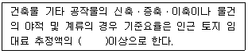
- 100분의 20
- 100분의 30
- 100분의 40
- 100분의 50
(정답률: 42%)
39. 자료수집방법의 하나인 인터뷰(interview)와 관련된 설명 중 옳지 않은 것은?
- 개인별 또는 일정그룹을 대상으로 한다.
- 상황에 대한 사전분석을 통하여 어떤 점이 중요한지 조사한다.
- 인터뷰 관정에서 보다 확실한 정보를 얻기 위하여 적절한 대응(probing)이 필요하다.
- 누가, 무엇을, 누구와 함께 행동하는지를 조사한다.
(정답률: 66%)
40. 관광지 계획에서 설명하는 유치권이란?
- 관광지에 찾아올 가능성이 있는 사람이 거주하는 범위
- 관광지에 매력과 관광객의 욕구에 의해 결정되는 범위
- 관광객을 서로 보내고 받는 보완관계가 성립하는 범위
- 계획하는 관광지와 경합되는 관광지가 존재하는 범위
(정답률: 66%)
3과목: 조경설계
41. 다음 중 파노라믹 경관(panormic landscape)을 가장 잘 설명한 것은?
- 수림이나 계곡이 보이는 자연경관
- 원거리의 물체들이 가까이 접근해 있는 물체의 일부에 가리워 액자(額子)에 넣어진 듯 보이는 경관
- 원거리의 물체들을 시선을 가로막는 장해물 없이 조망할 수 있는 경관
- 아침 안개나 저녁노을과 같이 기상조건에 따라 단시간 동안만 나타나는 경관
(정답률: 65%)
42. 재료의 단면 표시 중 벽돌을 나타내는 것은?
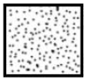
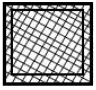
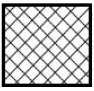
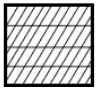
(정답률: 59%)
43. 다음 입체도를 제3각법 정투상도로 옳게 나타낸 것은?
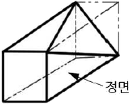
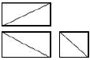
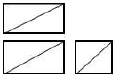
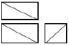
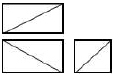
(정답률: 69%)
44. 다음의 두 도형에 있어서 동일 면적인 작은 원 a, b 중 a 가 b 보다 크게 보이는 착시현상은 무엇 때문인가?
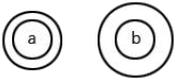
- 대비의 착시
- 분할의 착시
- 면적에 대한 착시
- 수평수직에 의한 착시
(정답률: 55%)
45. 다음 중 그네에 관한 조경설계기준으로 옳지 않은 것은?
- 그네는 햇빛을 마주하지 않도록 북향 또는 동향으로 배치한다.
- 놀이터 외곽이나 모서리를 피하여 중앙이나 출입구 주변에 배치한다.
- 2인용을 기준으로 높이 2.3~2.5m, 길이 3.0~3.5m, 폭 4.5~5.0m를 표준규격으로 한다.
- 그네의 안장과 모래밭과의 높이는 35~45㎝가 되도록하며, 이용자의 나이를 고려하여 결정한다.
(정답률: 67%)
46. 척도에 관한 설명으로 옳지 않은 것은?
- 현척은 실제 크기를 의미한다.
- 배척은 실제보다 큰 크기를 의미한다.
- 축척은 실제보다 작은 크기를 의미한다.
- 그림의 크기가 치수와 비례하지 않으면 NP를 기입한다.
(정답률: 75%)
47. 다음 중 계단의 설치기준이 틀린 것은?(단, 건축물의 피난ㆍ방화구조 등의 기준에 관한 규칙을 적용한다)
- 높이가 3m를 넘는 계단에는 높이 3m이내마다 너비 1.2m 이상의 계단참을 설치하여야 한다.
- 높이가 1m를 넘는 계단 및 계단참의 양옆에는 난간(벽 또는 이에 대치되는 것을 포함한다.)을 설치하여야 한다.
- 계단의 유효 높이(계단의 바닥 마감면부터 상부 구조체의 하부 마감면까지의 연직방향의 높이를 말한다)는 1.5m 이상으로 한다.
- 계단의 손잡이는 최대지름이 3.2㎝ 이상 3.8㎝ 이하인 원형 또는 타원형의 단면으로 하여야 한다.
(정답률: 24%)
48. 노상주차장의 구조ㆍ설비기준에 관한 내용 중 옳지 않은 것은?
- 고가도로에 설치하여서는 아니 된다.
- 너비 6m 미만의 도로에 설치하지 않는 것이 원칙이다.
- 주차대수 10대 마다 장애인전용주차구획을 1면씩 확보하여야 한다.
- 종단경사도(자동차 진행방향의 기울기)가 4%를 초과하는 도로에 설치하지 않는 것이 원칙이다.
(정답률: 67%)
49. '자연경관처럼 사람들에게 잘 알려진 색은 조화롭다'와 연관된 색채조화론 원리는?
- 질서의 원리
- 명료성의 원리
- 유사성의 원리
- 친근감의 원리
(정답률: 68%)
50. 공원내 보행자 도로를 설계하려 할 때 설계기준으로 부적합한 것은?
- 원활한 배수처리를 위하여 10%정도의 경사를 준다.
- 배수 구조물은 연석에 접한 곳에 설치한다.
- 연석은 단차를 두어 경계를 분명히 하는 것이 좋다.
- 표면처리는 미끄럽지 않은 부드러운 재료를 사용하는 것이 좋다.
(정답률: 71%)
51. 다음의 노외주차장의 구조ㆍ설비에 관한 기준 내용 중 ( )안에 알맞은 것은?
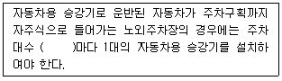
- 20대
- 30대
- 50대
- 100대
(정답률: 42%)
52. 다음 색에 관한 설명 중 옳은 것은?
- 파랑 계통은 한색이고, 진출색ㆍ팽창색이다.
- 파랑 계통은 난색이고, 후퇴색ㆍ팽창색이다.
- 빨강 계통은 난색이고, 진출색ㆍ팽창색이다.
- 빨강 계통은 한색이고, 후퇴색ㆍ팽창색이다.
(정답률: 71%)
53. 미적 반응과정 순서가 옳게 연결된 것은?
- 자극 → 자극탐구 → 자극선택 → 자극해석 → 반응
- 자극 → 자극선택 → 자극탐구 → 자극해석 → 반응
- 자극 → 자극해석 → 자극선택 → 자극탐구 → 반응
- 자극 → 자극선택 → 자극판단 → 자극해석 → 반응
(정답률: 65%)
54. 다음 중 환경조형시설의 일반적인 조경설계기준으로 옳지 않은 것은?
- 「문화예술진흥법」에 따른 미술장식품과 설계대상공간에 대중적 문화예술품으로 설치되는 환경조형시설의 설계에 적용한다.
- 기능성 환경조형물은 시계탑, 조명기구, 문주 등 본래 시설물이 지니는 기능은 충족시키면서 덧붙여 조형적 가치와 의미가 충분히 발휘되도록 설계한 환경조형물이다.
- 기능성 환경조형시설은 놀이기능(조형놀이시설), 어귀의 식별성(공원이나 단지의 문주), 공간의 분리(장식벽) 등의 본래의 기능 발휘에 충실하여야 한다.
- 시각적 특성과 관람자의 호기심을 유도하기 위해 조형물 전체를 감상하기 위해서는 시설물 높이의 1~2배의 관람 거리를 확보한다.
(정답률: 57%)
55. 구조물 전체의 개략적인 모양을 표시하는 도면으로 구조물 주위의 지형주물을 표시하여 지형과 구조물과의 연관성을 명확하게 표현하는 도면은?
- 구조도
- 측량도
- 설명도
- 일반도
(정답률: 50%)
56. 보행전용도로 양쪽에 10m 높이의 건물을 신축하고자 한다. 이때 이 건물에 의해 위요되는 공간에 친밀한 성격을 부여하기 위해 띄워야 하는 거리의 범위는 어느 것이 가장 적당한가?
- 5~10m
- 10~30m
- 30~60m
- 60~80m
(정답률: 62%)
57. 제도에서 한글 서체는 수직에 대하여 오른쪽으로 어느 정도 경사지게 쓰는 것이 원칙인가?
- 10°
- 15°
- 20°
- 30°
(정답률: 68%)
58. 색의 3속성에 대한 설명 중 옳은 것은?
- 색의 강약, 즉 포화도를 명도라고 한다.
- 감각에 따라 식별되는 색의 종류를 채도라 한다.
- 두 색 중에서 빛의 반사율이 높은 쪽이 밝은 색이다.
- 그레이 스케일(Gray scale)은 채도의 기준 척도로 사용된다.
(정답률: 65%)
59. 다음 중 어도의 조경설계기준 설명으로 옳지 않은 것은?
- 어도의 설치 위치는 하천의 유황과 하상변동, 대상어종의 생태 및 습성, 어도의 규모, 상류부의 취수시설 위치 등을 고려하여 결정한다.
- 어도하류부의 기본 하상고는 하상변동에 의해 낙차가 크게 발생해야 어도기능을 충분히 수행할 수 있으므로 보의 하류부 하상고 이상으로 설치한다.
- 어도의 길이와 경사는 하천공작물의 높이와 경사에 의해 결정하는데, 일반적으로 1/10~1/20의 경사가 적당하다.
- 폭은 어류가 주로 이동하는 시기에 어도로 물이 흐를 수 있는 조건과 어류가 운영할 때 꼬리치는 폭이 체장의 1/2정도이므로 이를 감안하여 보 길이의 1~15% 범위로하고, 유영이 필요한 최소 수심은 체고의 2배로 한다.
(정답률: 49%)
60. 균형에 관한 설명 중 틀린 것은?
- 의도적으로 불균형을 구성할 때도 있다.
- 좌우의 무게는 시각적 무게로 균형을 맞춰야 한다.
- 전체적인 조화를 위해서 불균형이 강조되어야 한다.
- 균형은 안정감을 창조하는 질(Quality)로서 정의 된다.
(정답률: 73%)
4과목: 조경식재
61. 공원에 파고라(pergola)를 설치하고, 덩굴성 식물로 파고라 주변에 식재하려 한다. 그 목적을 달성하기 위하여 어떠한 식물이 가장 적합한가?
- Wisteria floribunda DC. for. floribunda
- Forsythia koreana Nakai
- Abeliophyllum distichum Nakai
- Chaenomeles sinensis Koehne
(정답률: 53%)
62. 조경배식 계획시에 수목의 생장속도를 고려하여야 하는데 생장속도를 고려하여 그림과 같이 A, B를 배식한다고 할 때 수목의 조합이 가장 옳게 된 것은?
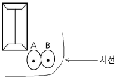
- A : Sambucus williamsii var. coreana Nakai B : Paeonia suffruticosa Andrews
- A : Prunus mume Siebold & Zucc. for. mume B : Albizia julibrissin Durazz.
- A : Viburnum opulus for. hydrangeoides Hara B : Acer negundo L.
- A : Chamaecyparis pisifera var. filifera B : Juniperus chinensis'Kaizuka'
(정답률: 30%)
63. 다음 중 성숙했을 때 검은색의 열매를 갖는 수종은?
- Ilex crenata Thunb. var. cremata
- Callicarpa dichotoma K.Koch
- Ilex integra Thunb.
- Euonymus japonicus Thunb.
(정답률: 41%)
64. 다음 [보기]의 설명에 적합한 수종은?
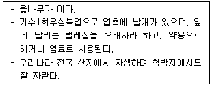
- Rhus javanica L.
- Acer palmatum Thunb.
- Ailanthus altissima Swingle for. altissima
- Zanthoxylum schinifolium Siebold & Zucc.
(정답률: 44%)
65. 다음 단풍나무과(科) 식물에 관한 설명으로 옳지 않은 것은?
- Acer tataricum subsp. ginnala Wesm. 는 잎의 하단부에서 3개로 갈라지며 복거치가 있고, 단풍은 붉은 색이다.
- Acer negundo L. 은 잎이 5~7개로 갈라지고 가장자리에 거친 톱니가 있으며, 단풍은 붉은 색이다.
- Acer triflorum Kom. 의 잎은 3출엽으로 단풍은 붉은 색이다.
- Acer saccharinum L. 은 잎이 5개로 갈라지며 복거치가 있고, 잎 뒷면이 은백색이다.
(정답률: 55%)
66. 다음 중 속명(屬名)이 Trachelospermum 이고, 영명이 Chinese Jasmine 이며, 한자명이 백화등(白花藤)인 것은?
- 으아리
- 마삭줄
- 인동덩굴
- 줄사철
(정답률: 60%)
67. 다음 중 꽃이 아름다운 수목의 개화기(開花期)가 빠른 것부터 순서대로 옳게 나열된 것은?
- Rosa multiflora var. platyphylla Thory → Daphne odora Thunb.
- Cornus kousa F.Buerger ex Miquel → Sophora japonica L.
- Osmanthus fragrans var. aurantiacus Makino → Wisteria floribunda DC. for. floribunda
- Hibiscus mutabilis L. → Ligustrum obtusifolium Siebold & Zucc.
(정답률: 45%)
68. 배식에 있어서 대식(對植)에 대한 설명으로 옳지 않은 것은?
- 수종은 달라도 수형만 동일하면 된다.
- 동형동종(同形同種)의 수목을 한 조(組)로 한다.
- 건물이나 기단의 전면에 축을 중심으로 좌우에 배치한다.
- 사찰, 궁전, 기념물 등의 전면에 주로 사용하며 장중한 느낌을 준다.
(정답률: 68%)
69. 다음 중 줄기의 색채가 회갈색인 것은?
- Camellia japonica L.
- Pinus densiflora for. erecta Uyeki
- Taxus cuspidata Siebold & Zucc.
- Cryptomeria japonica D.Don
(정답률: 42%)
70. 다음 설명은 어떤 등반유형별 식재방법에 해당하는가?
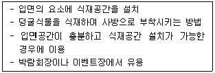
- 등반부착형
- 등반감기형
- 면적형
- 하수형
(정답률: 45%)
71. 개울가, 연못 가장자리 등 습윤지에서 잘 자라는 수종이 아닌 것은?
- Taxodium distichum Rich.
- Juniperus chinensis L.
- Salix pseudolasiogyne H.Lev.
- Cryptomeria japonica D.Don
(정답률: 48%)
72. 다음 중 원산지가 외래수종으로 짝지어진 것은?
- Juglans regia Dode, Punica granatum L.
- Cornus kousa F.Buerger ex Miquel, Sorbus alnifolia K.Koch
- Cornus alba L, Forsythia koreana (Rehder) Nakai
- Crataegus pinnatifida Bunge, Berberis koreana Palib.
(정답률: 55%)
73. 다음 [보기]의 설명에 적합한 용어는?
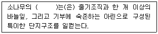
- 권상
- 단정화서
- 부아
- 속생지
(정답률: 60%)
74. 실내식물의 환경조건에 대한 설명으로 옳지 않은 것은?
- 실내에서는 건축적 제약으로 인하여 하루 12~18시간 정도 빛을 공급받아야 한다.
- 실내정원의 낮 온도는 21~24℃, 밤에는 15~18℃로 유지시켜야 한다.
- 식물에 있어서 최적습도는 70~90%인데, 상대습도 30%이상이면 대부분의 식물은 적응할 수 있다.
- 실내조경용 토양은 배수가 양호하고 양분이 많은 순수토양을 사용해야 한다.
(정답률: 57%)
75. 수목을 차폐의 소재로 사용하기 위한 평가사항으로 적합하지 않은 것은?
- 관찰자의 움직임
- 차폐가 필요한 방향
- 바람과 태양의 이동방향
- 차폐대상의 계절적 경관 특성
(정답률: 52%)
76. 보행자로부터 5m 떨어진 장소에서 멈춰 서 있는 택시의 경적 소리가 60dB의 크기로 들린다고 가정 할 때, 2배 멀어진 거리에서 들리는 경적 소리의 크기(dB)는 약 얼마인가?
- 57
- 54
- 51
- 48
(정답률: 49%)
77. 다음 중 상관(相觀)에 의한 식생구분은?
- 군계에 의한 것
- 우점종에 의한 것
- 표징종에 의한 것
- 구분종에 의한 것
(정답률: 52%)
78. 다음 [보기]에서 설명하는 지피물은?
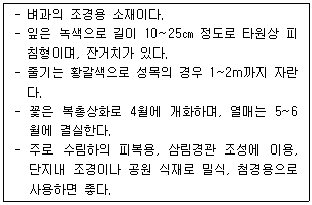
- Equisetum hyemale L.
- Typha orientalis Presl
- Sasa borealis Makino
- Hosta minor Nakai
(정답률: 55%)
79. 다음 식물의 층위를 설명한 것 중 옳지 않은 것은?
- 식물이 자생하는 곳에서는 상층목, 하층목, 관목, 초본, 이끼 등의 단계가 있다.
- 층화는 식물의 종류들이 각기 적절한 공간을 이루며 생장한다.
- 생태적 식재를 위한 공간에서는 층화를 응용하는 것이 필요하다.
- 식물의 층화는 활엽수나 침엽수의 수목 종별에 따라 후발적으로 발생하는 것이다.
(정답률: 73%)
80. 다음 조경수 중 상록수끼리만 나열된 것은?
- 은행나무, 주목, 낙우송
- 측백나무, 자금우, 가시나무
- 버드나무, 소귀나무, 가래나무
- 태산목, 녹나무, 멀구슬나무
(정답률: 44%)
5과목: 조경시공구조학
81. 그림에서 도심축에 대한 단면 2차모멘트는 얼마인가?
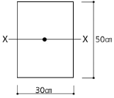
- 31250㎝4
- 312500㎝4
- 37500㎝4
- 375000㎝4
(정답률: 47%)
82. 다음 중 철제 조경시설관리에서 도장의 목적이 아닌 것은?
- 물체표면의 보호
- 부식 및 노화의 방지
- 미관의 증진
- 방충성 증진
(정답률: 69%)
83. 계속 타설 중인 콘크리트에 있어 외기온이 25℃ 미만일 때의 이어붓기 시간 간격의 한도로 옳은 것은?
- 150분
- 120분
- 90분
- 60분
(정답률: 35%)
84. 다수의 미세한 기포의 작용에 의해 콘크리트의 워커빌리티와 동결 융해에 대한 저항성을 개선시키는 것은?
- 촉진제
- AE제
- 지연제
- 포졸란(pozzolan)
(정답률: 54%)
85. 그림과 같은 보에서 지점 B에서의 반력의 크기는 몇 kN인가?
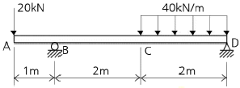
- 35
- 45
- 55
- 65
(정답률: 47%)
86. 조명시설의 용어 중 단위면에 수직으로 투하된 광속밀도를 무엇이라 하는가?
- 광도(luminous intensity)
- 조도(illumination)
- 휘도(brightness)
- 배광곡선
(정답률: 65%)
87. 등고선의 특성을 설명한 것 중 옳지 않은 것은?
- 같은 등고선 상에 있는 모든 점은 같은 높이에 있다.
- 모든 등고선은 도면 내에서만 폐합(廢合)한다.
- 등고선은 단애(斷崖)나 절벽이 아니고는 서로 만나지 않는다.
- 등고선의 간격은 급경사지에서는 좁고 완경사지에서는 넓다.
(정답률: 69%)
88. 다음 중 품셈을 가장 잘 설명한 것은?
- 물체를 만드는데 필요한 노력과 물질의 수량이다.
- 시공현장에서 소요되는 재료의 물량을 집계한 것이다.
- 건설공사에 소요되는 공사비를 산정하는 과정을 말한다.
- 공사에 소요되는 노무량만을 수량으로 표시하여 금액을 산출할 수 있게 한 것이다.
(정답률: 58%)
89. 축척 1:500 지형도(30㎝×30㎝)를 기초로 하여 축척이 1:2500인 지형도(30㎝×30㎝)를 제작하기 위해서는 축척 1:500 지형도가 몇 매 필요한가?
- 25매
- 15매
- 10매
- 5매
(정답률: 64%)
90. 공사관리의 핵심은 설계도서를 근거로 적합하게 시공할 수 있는 조건과 방법을 계획하는 측면인 시공계획과 계획대로 시공하기 위한 시공관리로 구분되는데 시공관리에 포함되지 않는 것은?
- 노무관리
- 품질관리
- 원가관리
- 공정관리
(정답률: 57%)
91. 캔틸레버 보(Cantilever beam)의 설명으로 옳은 것은?
- 보의 양단(兩端)을 메워 넣어서 고정시킨 것
- 일단(一端)이 회전점, 타단(他端)이 이동 지점인 것
- 일단(一端)이 고정지점이고 타단(他端)에는 지점이 없는 자유단인 것
- 3개 이상의 지점으로 지지하고 있는 보로서 단순보와 내다지보를 조합한 것
(정답률: 66%)
92. 노선측량시 완화곡선에 대한 설명으로 옳지 않은 것은?
- 완화곡선의 곡률(1/R)은 곡선길이에 비례한다.
- 완화곡선의 접선은 시점에서 원호에, 종점에서 직선에 접한다.
- 곡선반경은 완화곡선의 시점에서 무한대, 종점에서 원곡선 R로 된다.
- 직선과 원곡선 사이에 반지름이 무한대로부터 점점 작아져서 원곡선에 일치하도록 설치하는 특수곡선이다.
(정답률: 36%)
93. 합성수지 중 무색 투명판으로 착색이 자유롭고 광선이나 자외선의 투과성이 크며, 유기유리로도 불리우는 것은?
- 멜라민 수지
- 초산비닐수지
- 아크릴 수지
- 폴리에스테르수지
(정답률: 69%)
94. TQC를 위한 7가지 도구 중 다음 설명이 의미하는 것은?
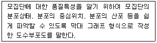
- 체크시트
- 파레토도
- 히스토그램
- 특성요인도
(정답률: 63%)
95. 산업재해 보상보험료(산재보험료)에 대한 설명으로 옳지 않은 것은?
- 보험료의 산출은 노무비 총액에 일정 요율을 곱하여 산정한다.
- 경비항목에 포함시켜 계상한다.
- 일반관리비 산정시에는 제외시켜 계상한다.
- 법령에 의하여 강제적으로 가입되는 항목이다.
(정답률: 44%)
96. 다음 중 콘크리트의 크리프(creep)에 대한 설명으로 틀린 것은?(오류 신고가 접수된 문제입니다. 반드시 정답과 해설을 확인하시기 바랍니다.)
- 작용응력이 클수록 크리프는 크다.
- 재하재령이 빠를수록 크리프는 크다.
- 물시멘트비가 작을수록 크리프는 작다.
- 시멘트페이스트가 많을수록 크리프는 크다.
(정답률: 40%)
97. 살수반경이 4m 되는 살수기를 2.8m 간격으로 배치하였다. 정삼각형 배치방법으로 설치한다면 열과 열 사이 거리는 얼마가 적당한가?
- 1.6m
- 1.8m
- 2.2m
- 2.4m
(정답률: 51%)
98. 그림과 같은 등변분포하중이 작용하는 단순보의 최대휨모멘트 Mmax는?
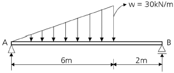
- 25√2kN?m
- 90√2N?m
- 25√3N?m
- 90√3N?m
(정답률: 42%)
99. 50촉광(candle power)인 점광원으로 부터 2m거리에서 그 방향과 직각인 면과 30°기울어진 평면 위의 조도는 얼마인가? (단, cos30°= 0.86, sin30° = 0.5)
- 6.25룩스
- 10.75룩스
- 12.5룩스
- 25.0룩스
(정답률: 43%)
100. 다음 목재에 관한 설명 중 옳지 않은 것은?
- 목재의 강도는 절대 건조일 때 최대가 된다.
- 제재후의 심재는 변재보다 썩기 쉽다.
- 벌목시기는 가을에서 겨울이 최적기이다.
- 목재는 세포막 중에 스며든 결합수가 감소하면 수축변형한다.
(정답률: 52%)
6과목: 조경관리론
101. 마그네슘(Mg)과 길항관계를 갖는 양분은?
- Mn
- Cu
- Na
- Fe
(정답률: 64%)
102. 조경시공 중 안전관리시 기준으로 삼아야 할 안전관련법규에 해당되지 않는 것은?
- 근로기준법
- 소방기본법
- 건설산업기본법
- 엔지니어링산업진흥법
(정답률: 70%)
103. 삽목 시 발근촉진을 위해 사용하는 식물호르몬제는?
- 나드 분제
- 말레이 액제
- 비나인 수화제
- 이나벤화이드 입제
(정답률: 39%)
104. 주로 유기물이 많은 표층토에서 발달하고 지렁이와 같은 토양동물의 활동이 많은 토양에서 발견되는 토양구조는?
- 판상(板狀)구조
- 각주상(角柱狀)구조
- 괴상(塊狀)구조
- 구상(球狀)구조
(정답률: 39%)
1⑤. 다음 중 짧은 예취에 견디는 힘(內短刈性)이 가장 강한 잔디는?
- 켄터키블루그라스
- 레드훼스큐
- 페러니얼라이그라스
- 벤트그라스
(정답률: 46%)
106. 조경관리비의 단위년도 당 예산수립은 a = TㆍP식에 의하여 산정할 수 있다. 여기서 P는 무엇을 의미하는가? (단, a는 단위년도 당 예산, T는 작업 전체의 비용이다.)
- 연간 작업회수
- 작업률
- 작업효율
- 이용률
(정답률: 52%)
107. 상해를 예방하기 위하여 속효성 비료를 주는 동시에 늦가을까지 가지가 도장(徒長)되지 않도록 주는 비료는?
- K
- N
- P
- Ca
(정답률: 34%)
108. 레크레이션 수용능력을 정의한 학자 중 1972년 Penfold는 수용능력에 대한 분류체계를 확립하였다. 그 수용능력 3가지의 분류방법에 속하지 않는 것은?
- 물리적 수용능력
- 생태적 수용능력
- 심리적 수용능력
- 제도적 수용능력
(정답률: 64%)
109. 최근 우리나라 참나무림에 피해를 주고 있으며 시들음병을 매개하는 해충은?
- 오리나무좀
- 미국느릅나무좀
- 광릉긴나무좀
- 가문비왕나무좀
(정답률: 68%)
110. 다음 중 토양의 공극률 결정에 가장 중요한 요인은?
- 토성(土性)
- 토양반응
- 염기포화도
- 기비중과 진비중
(정답률: 52%)
111. 토양의 투수성, 통기성, 보수성, 경운작업의 용이성 등에 영향을 미치는 토양 특성은?
- 양이온교환용량
- 토성
- 토양반응
- 염기포화도
(정답률: 59%)
112. 다음 설명의 (가)와 (나)에 들어갈 용어로 짝지어진 것은?
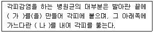
- 가 : 기공하낭 나 : 침입균사
- 가 : 기공하포 나 : 근상균사
- 가 : 부착기 나 : 침입균사
- 가 : 생식기 나 : 근상균사
(정답률: 57%)
113. 그 자체만으로는 살충력이 없으나, 혼용되는 살충제의 생물활성을 증대시키는 물질은?
- 증량제
- 공력제
- 용제
- 저해제
(정답률: 42%)
114. 농약의 물리적 성질 중 현수성(Suspensibility)의 의미를 가장 잘 설명한 것은?
- 농약을 물에 가했을 때 물과 약제와의 친화도를 나타낸다.
- 농약을 물에 가하여 작물에 뿌렸을 때 잘 부착되는 성질을 말한다.
- 농약을 물에 가했을 때 균일하게 분산, 부유하는 성질과 그 안전성을 나타낸다.
- 농약을 물에 가했을 경우에 유입자가 균일하게 분산하여 유탁액을 만드는 성질이다.
(정답률: 43%)
115. 다음 중 담자균류에 의한 수목병이 아닌 것은?
- 소나무 잎녹병
- 밤나무 줄기마름병
- 오리나무류 줄기마름병
- 가문비나무 줄기썩음병
(정답률: 28%)
116. 노거수의 뿌리관리에 관한 설명 중 옳지 않은 것은?
- 기존수목(주변에 성토가 불가피할 때)을 보호하고 산소공급을 원활하게 하기 위하여 나무우물을 만들어 준다.
- 도로개설 공사로 장저작업 후 기존지면의 뿌리가 노출될 경우 돌옹벽을 쌓아서 보호한다.
- 도로개설시 노거수를 보호하기 위하여 줄기 둘레에 가까이 콘크리트 포장을 하도록 한다.
- 주변에 사람이 모일 것이 예상되면 수목뿌리 보호판을 설치하여야 한다.
(정답률: 72%)
117. 다음 중 병원체가 종자의 표면에 부착해서 전반(傳搬)되는 것은?
- 근두암종병균
- 잣나무 털녹병균
- 밤나무 줄기마름병균
- 오리나무 갈색무늬병균
(정답률: 36%)
118. 피레드린(Pyrethrin)성분을 함유하는 천연살충용 식물은?
- 송지
- 연초
- 테리스
- 제충국
(정답률: 60%)
119. 잔디의 스컬핑(Sculping) 현상이란?
- 햇볕이 부족해서 도장하는 현상
- 과도한 깎기로 줄기만 남는 현상
- 과도한 답압으로 생기는 생육불량 현상
- 배수불량으로 말라죽는 현상
(정답률: 58%)
120. 오동나무 빗자루병의 매개충은?
- 말매미
- 목화진딧물
- 꽃노랑총채벌레
- 담배장님노린재
(정답률: 71%)